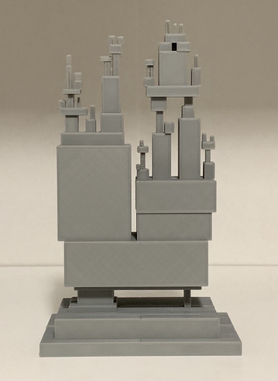

I 3D-modeled xkcd 2347 Dependency. No rounded corners; just cuboids.
Here's the STL: All Modern Digital Infrastructure.stl
I bisected it and printed the faces separately. If you want to try that, here are the halves: AMDI_front.stl and AMDI_back.stl.
No commercial use. The original comic is licensed under a Creative Commons Attribution-NonCommercial 2.5 License; don't go selling these.
I modeled this in Tinkercad. In theory, this link may let you download the source and make changes, but you know how it is with online resources. Link rot's spores germinate already.
